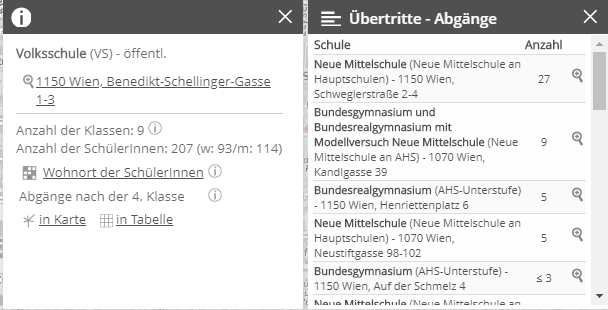

Drawing on public data from Vienna’s school administration I look at how many percentages of pupils in each primary school subsequently leave for schools offering eventually a higher education entrance qualification (Matura). The main interest is in contrasting these ratios between closely (geo-)located schools.
Author
Roland Schmidt
Published
2 Mar 2020
1 Context
Our daughter will turn six this summer and in Austria this means that she will start attending school in autumn. While in most parts of Austria’s countryside it’s a rather foregone conclusion to which school a new pupil will go (since there is mostly only one school ‘in town’), choosing a school for your kid in a city like Vienna can become a somewhat protracted decision making process with numerous schools in the vicinity to select from. While visiting the different schools in our neighbourhood and trying to make an informed decision in the best interest of the child, I was startled by a repeated story of two closely located schools, where one school was said to be for kids with migration-background (‘Migrationshintergrund’), and the other for kids from native German speakers. While I am simplifying here and much of this story remains vague - where does it come from, how is this separation made, who makes this separation - I found this account remarkable to say at least.
The inconvenient elephant in the room here seems to be some parents’ fear that kids who do not speak German as a native language would slow down the educational development of their own, native German speakers (pure xenophobic impulses I even do not want to consider here). While I see to some extent the concern, the idea that kids of different backgrounds are effectively separated into different schools strikes me as a completely unacceptable development and brings up associations with the history of a country at the southern cone of Africa (not to speak of Austria’s darker past).
2 Analysis
So, triggered by this ‘hearsay’ (and, guilty as charged, by my affinity with R), I wanted to dig a bit deeper and see whether ‘the data’ has anything pertaining to say. The straightforward approach would be simply to look at the share of kids with first languages other than German in each school and compare them. While this data is certainly collected (when enrolling your kid), as far as I can tell, it is not made publicly available on an individual school level (and maybe that’s actually good). However, during our school search I came across a rather informative map provided by Austria’s statistical office (see here). The map presents not only the location for every (primary) school in Austria, but also data on the school subsequently attended by its pupils once they finished the fourth grade. See e.g. the image below.

In short, with this data we know how many % of all pupils ‘graduating’ from a primary school’s 4th grade subsequently attended either a AHS (or equivalent; a high school/gymnasium) or an NMS (or equivalent; ‘new secondary school’). Critically, an AHS offers a direct trajectory to a school leaving examination after eight years which is required to attend university. In contrast, an NMS lasts only for four years after which kids either go for an apprenticeship, start to work, or if their school record was good enough, switch for another four to five years to an AHS or similar school type which offers a school leaving exam. To (over)simplify, leaving for an AHS is by and large considered to be better for the future educational and professional development. I will subsequently call the % of kids per school leaving for an AHS (or equivalent) the AHS ratio.1
2.1 Differences between districts
In an ‘ideal-typical’ world, without any non-randomly distributed confounding factors, the rates of pupils leaving for an AHS should be rather similar across the board. That this is not the case, however, doesn’t come at a surprise. Socio-economic factors of all kinds influence a school’s as well as a kid’s ability to educationally prosper. These factors are frequently geographically clustered and hence can account for different school-leaving ratios between schools.
To see this in the context in Vienna, I downloaded the data (2018/2019) for every Viennese primary school from the above-mentioned map of Statistik Austria and calculated the ratio of kids leaving for an AHS (or equivalent school). If we separate the result of schools by district and whether they are privately or publicly run, we get the graph below. Hover-over each dot/school to get details.
Code
# get link to json file with data embedded in the websitedata_link <-"https://www.statistik.at/gs-atlas/ATLAS_SCHULE_WFS/ows?service=WFS&version=1.0.0&request=GetFeature&typeName=ATLAS_SCHULE_WFS:ATLAS_SCHULE&outputFormat=application%2Fjson&srsname=EPSG:3857&"# download jsonfile and extract field with relevant data# df_schools <- jsonlite::fromJSON(data_link, flatten=TRUE) %>%# pluck("features") %>% #extract nested list with data on schools# janitor::clean_names() #clean/standardize names of data columnsdf_schools <- jsonlite::fromJSON(data_link, flatten =TRUE)df_schools <- df_schools$features %>%# extract nested list with data on schools janitor::clean_names() # clean/standardize names of data columns# take only those primary schools located in Viennadf_primary_schools_vienna <- df_schools %>%filter(properties_karto_typ =="VS") %>%# filter only primary schoolsfilter(str_detect(properties_plz, "^1")) %>%as_tibble() %>%mutate(properties_skz =as.numeric(properties_skz)) %>%mutate(school_adress =paste0(properties_str, ", ", properties_plz, " ", properties_ort))# data on 263 primary schools was obtainedn_distinct(df_primary_schools_vienna$properties_skz) # 263
[1] 281
Code
# link to on pupils' destinations combined with each primary school's ID# gives vector for all destination tableslibrary(glue)df_destinations_links <-glue("https://www.statistik.at/gs-atlas/ATLAS_SCHULE_WFS/ows?service=WFS&version=1.0.0&request=GetFeature&typeName=ATLAS_SCHULE_WFS:ATLAS_SCHULE_UEBERTRITT_OUT_WFS&maxFeatures=500&outputFormat=application%2Fjson&viewparams=SKZ:{df_primary_schools_vienna$properties_skz}") %>%enframe(value ="link", name =NULL)NROW(df_destinations_links) # 263 primary schools in Vienna
[1] 263
Code
# define function to get pupils' destinatino data for one schoolfn_get_destination_data <-function(school_link) { jsonlite::fromJSON(school_link, flatten =TRUE) %>% purrr::pluck("features") %>% janitor::clean_names() %>%as_tibble() %>%mutate(school_link = school_link)}# apply function to all schoolsdf_destination_data <-map_dfr( df_destinations_links$link,possibly(fn_get_destination_data,otherwise =tibble() ))# only 257 out of 263 primary schools with destination data;# 6 schools still without 'graduates'length(unique(df_destination_data$properties_skz_vj))
[1] 260
Code
df_destination_data
# A tibble: 4,970 × 17
type id geome…¹ prope…² prope…³ prope…⁴ prope…⁵ prope…⁶ prope…⁷ prope…⁸ prope…⁹ prope…˟ prope…˟ properti…˟ properti…˟ prope…˟ schoo…˟
<chr> <chr> <lgl> <chr> <chr> <chr> <chr> <chr> <chr> <chr> <chr> <chr> <int> <dbl> <dbl> <chr> <glue>
1 Feature ATLAS_SCHULE… NA 923081 01 923046 05a NMSA Bundes… 1230 Wien Anton-… 16 1812226.97 6130263.31 Neue M… https:…
2 Feature ATLAS_SCHULE… NA 923081 01 923052 02a NMSH Mittel… 1230 Wien Bendag… 9 1810895.04 6132223.34 Neue M… https:…
3 Feature ATLAS_SCHULE… NA 923081 01 923042 02a NMSH Mittel… 1230 Wien Dirmhi… 6 1812595.22 6129624.41 Neue M… https:…
4 Feature ATLAS_SCHULE… NA 923081 01 923066 05 AHS Bundes… 1230 Wien Anton … 0 1816122.4 6131865.58 AHS-Un… https:…
5 Feature ATLAS_SCHULE… NA 923081 01 923012 02a NMSH Mittel… 1230 Wien Steine… 0 1813467.1 6131038.23 Neue M… https:…
6 Feature ATLAS_SCHULE… NA 923081 01 317036 05 AHS Bundes… 2380 Percht… Rosegg… 0 1810131.09 6127026.77 AHS-Un… https:…
7 Feature ATLAS_SCHULE… NA 923081 01 914046 05a NMSA Bundes… 1140 Wien Steinb… 0 1814655.29 6140990.85 Neue M… https:…
8 Feature ATLAS_SCHULE… NA 923081 01 923022 02a NMSH Mittel… 1230 Wien Anton … 0 1816525.01 6131994.97 Neue M… https:…
9 Feature ATLAS_SCHULE… NA 923081 01 923072 02a NMSH Privat… 1230 Wien Franz … 0 1810435.84 6132934.36 Neue M… https:…
10 Feature ATLAS_SCHULE… NA 923081 01 923081 WG VS Volkss… 1230 Wien Korbga… 0 1811725.88 6129568.48 Wieder… https:…
# … with 4,960 more rows, and abbreviated variable names ¹geometry, ²properties_skz_vj, ³properties_ipub2_typ_vj, ⁴properties_skz_laufend,
# ⁵properties_ipub2_typ_laufend, ⁶properties_karto_typ, ⁷properties_bezeichnung, ⁸properties_plz, ⁹properties_ort, ˟properties_str,
# ˟properties_anzahl, ˟properties_x_s2, ˟properties_y_s2, ˟properties_ipub2_bezeichnung, ˟school_link
Code
# take the destination data and create school-type indicator for schools which provide# a direct trajectory to a school leaving exam;# since the data provides a 0 if only three or less pupils transfered to a particular school# (I assume for data/privacy reasons), I set this number to 2 as some kind of middle ground; see# the table on the website of Statitik Austria;# Note the .drop=F option in the group_by function; it provides us with a summary value (0) even if #there was no puipil leaving for an AHS.df_destination_analysis <- df_destination_data %>%mutate(properties_karto_typ =as_factor(properties_karto_typ)) %>%mutate(school_type =case_when( properties_karto_typ =="NMSH"~"Neue Mittelschule", properties_karto_typ =="NMSA"~"Gymnasium mit Modelversuch Mittelschule", properties_karto_typ =="SS"~"Sonderschule", properties_karto_typ =="VS"~"Volksschule",TRUE~as.character(properties_karto_typ) )) %>%mutate(school_type_secondary =case_when( properties_karto_typ %in%c("AHS", "BMHSK", "BMHST") ~"matura",TRUE~as.character("no matura") )) %>%mutate(school_type_secondary =as_factor(school_type_secondary)) %>%mutate(properties_anzahl =case_when( properties_anzahl ==0~2, # changed to twoTRUE~as.numeric(properties_anzahl) )) %>%# assumpationgroup_by(properties_skz_vj, school_type_secondary, .drop = F) %>%summarise(n_obs =sum(properties_anzahl)) %>%ungroup()df_share <- df_destination_analysis %>%mutate(properties_skz_vj =as.numeric(properties_skz_vj)) %>%group_by(properties_skz_vj) %>%mutate(total =sum(n_obs)) %>%mutate(n_rel = n_obs /sum(n_obs)) %>%left_join(., df_primary_schools_vienna %>%# merge is wrong; has to be from primary dfselect( properties_skz, properties_bezeichnung, properties_erhalter, properties_str, properties_plz, properties_ort ),by =c("properties_skz_vj"="properties_skz") ) %>%ungroup() %>%mutate(district_code = stringr::str_sub(properties_plz, start =2, end =3) %>%as.numeric())
Code
my_caption <-c("Data: Statistik Austria, statistik.at/atlas/schulen/", "Analysis: Roland Schmidt | @zoowalk | <span style='color:black'>**werk.statt.codes**</span>")plot_district <- df_share %>%filter(school_type_secondary =="matura") %>%group_by(district_code) %>%mutate(n_median =median(n_rel)) %>%ungroup() %>%mutate(district_code =fct_reorder(as_factor(district_code), n_median)) %>%mutate(tooltip =paste("ratio: ", scales::percent(n_rel),"\n",paste(properties_bezeichnung, properties_str,paste0(district_code, ". ", "district"),sep =", " ),"\n", properties_erhalter,sep ="" )) %>%ggplot() +labs(title ="% of pupils leaving for secondary schools with school leaving certificate (Matura) per district",subtitle ="Data for 2018/2019.",y ="% of pupils per school leaving for schools with school leaving certificate (Matura)",x ="district",caption = my_caption ) +geom_boxplot(aes(x = district_code,y = n_rel ),fill ="transparent",color ="grey80",outlier.shape =NA ) +geom_jitter_interactive(aes(x = district_code,y = n_rel,color = properties_erhalter,tooltip = tooltip ),width = .20 ) +coord_flip() +theme_ipsum_rc() +scale_color_paletteer_d("ggsci::default_jama",labels =c("öffentlich"="public", "privat"="private") ) +scale_y_continuous(labels = scales::label_percent(),limits =c(0, 1) ) +theme(panel.grid.major.y =element_blank(),panel.grid.major.x =element_line(linetype ="dotted"),panel.grid.minor.x =element_line(linetype ="dotted"),legend.position ="top",legend.justification ="left",legend.title =element_blank(),plot.margin =margin(l =0, t =0.5, b =0.5, unit ="cm"),plot.background =element_rect(fill = plot_bg_color, color ="transparent"),plot.title =element_text(size =14, face ="bold", margin =margin(b =0, unit ="cm")),plot.title.position ="plot",plot.subtitle =element_text(size =12, color ="grey30"),plot.caption.position ="plot",plot.caption =element_markdown(color ="grey30", hjust =c(0, 1)) )library(ggiraph)plot_district <-girafe(ggobj = plot_district,options =list(opts_tooltip(css ="background-color:#323E4F; color: white;font-family:Roboto Condensed;",delay_mouseout =5000 )),pointsize =6,width_svg =10,height_svg =7) # 10 15
To me the graph reflects two things: First, contrasting the AHS-ratio, there is a considerable difference between districts. While the 11th, 10th and 20th district had median values of around 30 %, those of the 4th, 18th and 19th are above 70 %. Second, private schools (orange dots) have overwhelmingly higher AHS-ratios than the public schools in the same district. Does this come as a surprise? Not really. Is it ok? – Well, not really.
2.2 Role of pupils’ vernacular
To get an idea on any association between schools’ AHS ratio and pupils’ language skills, I added district level data on pupils’ vernacular. The available data (2017!) presents the % of primary school pupils whose vernacular is not German per district. Source. So to be clear, the data is district level data and not school level data and inferences from any association might suffer from an ecological fallacy. But in the absence of any better data, and bearing this caveat in mind, it seems worth looking into it. The graph below depicts each primary school’s AHS-ratio (y axis) and the pertaining district’s ratio of primary school kids with non-German vernacular (x axis). What becomes apparent is that there is quite a strong association between the two factors: The higher the ratio of kids with non-German vernacular, the lower the AHS ratio (a correlation coefficient of - .44). While this is largely in line with what is generally suggested, it is still rather sobering and highlights a pretty significant shortcoming of the educational system. Again, since we do not have individual/school level data on pupils’ language one has to be cautious and not jump to far fetched conclusions. But the data, in my view, would strongly suggest that non-native German speaking kids are let down by the school system (in the sense that their needs are not adequately addressed).
Code
# load the data on districts' german/non-german vernacular ratio (source in text),# recode name of districts to postal codesdf_language <- readr::read_csv(here("posts","2020-03-02-primary-schools-in-vienna","umgangssprache_deutsch_bezirk_wien.csv")) %>%clean_names() %>%rename(non_german_perc = x16_17,district = bezirk,pupils_total = volksschuler_innen_gesamt,german_abs = deutsch,non_german_abs = nicht_deutsch,non_german_perc_06 = x06_jul,change_16_06 = unterschied_in_percent ) %>%mutate(district_code =case_when( district =="Alsergrund"~9, district =="Brigittenau"~20, district =="Donaustadt"~22, district =="Döbling"~19, district =="Favoriten"~10, district =="Floridsdorf"~21, district =="Hernals"~17, district =="Hietzing"~13, district =="Innere Stadt"~1, district =="Josefstadt"~8, district =="Landstraße"~3, district =="Leopoldstadt"~2, district =="Liesing"~23, district =="Margareten"~5, district =="Mariahilf"~6, district =="Meidling"~12, district =="Neubau"~7, district =="Ottakring"~16, district =="Penzing"~14, district =="Rudolfsheim-Fünfhaus"~15, district =="Simmering"~11, district =="Wieden"~4, district =="Währing"~18,TRUE~NA_real_ ))# merge datadf_share <- df_share %>%left_join(., df_language %>%select(district_code, district, non_german_perc),by =c("district_code") )# produce plotplot_langauge <- df_share %>%mutate(tooltip =paste("ratio: ", scales::percent(n_rel),"\n",paste(properties_bezeichnung, properties_str,paste0(district_code, ". ", "district"),sep =", " ),"\n", properties_erhalter,sep ="" )) %>%filter(school_type_secondary =="matura") %>%filter(properties_erhalter =="öffentl.") %>%ggplot() +labs(y ="AHS ratio",title ="Relation between AHS ratio and primary school pupils' vernacular",subtitle =str_wrap("Note that AHS ratio are school level data; info on vernacular is district level data. Only public schools. Hover over dots to get details.",150 ),caption = my_caption,x ="% of primary school pupils with non-German vernacular per district" ) +geom_jitter_interactive(aes(x = non_german_perc,y = n_rel,tooltip = tooltip )) +geom_smooth(aes(x = non_german_perc,y = n_rel ),method ="lm", formula = y ~ x ) +scale_y_continuous(labels = scales::percent,minor_breaks =NULL ) +scale_x_continuous(labels = scales::label_percent(scale =1),minor_breaks =NULL,limits =c(0, 100) ) +scale_color_paletteer_d("ggsci::default_jama") +# facet_wrap(vars(properties_erhalter))+ hrbrthemes::theme_ipsum_rc() +theme(panel.grid.major.y =element_line(linetype ="dotted"),panel.grid.major.x =element_line(linetype ="dotted"),legend.position ="top",legend.justification ="left",legend.title =element_blank(),plot.margin =margin(l =0, t =0.5, b =0.5, unit ="cm"),plot.background =element_rect(fill = plot_bg_color, color ="transparent"),plot.title =element_text(size =14, face ="bold", margin =margin(b =0, unit ="cm")),plot.title.position ="plot",plot.subtitle =element_text(size =12, color ="grey30"),plot.caption.position ="plot",plot.caption =element_markdown(color ="grey30", hjust =c(0, 1)) )# wrap plot as htmlwidget for interactivityplot_langauge <-girafe(ggobj = plot_langauge,options =list(opts_tooltip(css ="background-color:#323E4F; color: white;font-family:Roboto Condensed;",delay_mouseout =5000 )),pointsize =6,width_svg =10,height_svg =7)# correlation coefficientcor( df_share$n_rel[df_share$school_type_secondary =="matura"], df_share$non_german_perc[df_share$school_type_secondary =="matura"])
[1] -0.416866311933
2.3 Same neighbourhood, different school results?
But to come back to my original point of departure, the two graphs above also show that there is significant variation within districts. While Vienna’s districts are frequently perceived as homogeneous subunits, there is considerable variation within these units which may obscure what we are interested in. To account for these differences and seeking to compare like for like schools as far as their neighbourhood is concerned, I retrieved the GPS position of every primary school and subsequently calculated the geographical distance between them. Have a look at the annotated code (that’s where most of the work went in).
Code
# apply function google_geocode to each address# use map (not map_chr) since you'll get a bunch of geographic detailsdf_primary_schools_vienna <- df_primary_schools_vienna %>%mutate(coord =map( school_adress,~google_geocode(.x, key = your_google_api_key) ))# extract from the nested list the with the wonderful 'pluck' function the values #your #interested (lat, lng)df_primary_schools_vienna <- df_primary_schools_vienna %>%mutate(lat =map_dbl( coord, purrr::pluck, "results", "geometry", "location","lat" )) %>%mutate(long =map_dbl( coord, purrr::pluck, "results", "geometry", "location","lng" ))
Code
# take only AHS-ratiosdf_diff <- df_share %>%ungroup() %>%filter(school_type_secondary =="matura") %>%select(properties_skz_vj, n_rel)# function outer creates an array including all combinations of schools# and calculates the difference of the AHS ratiosdiff_matrix <-outer(df_diff$n_rel, df_diff$n_rel, FUN ="-") %>%data.frame()names(diff_matrix) <- df_diff$properties_skz_vjdiff_matrix$school_1 <- df_diff$properties_skz_vj# with pivot_longer we bring the array in the long format;# create a pair indictor with pmin/pmax which is indentical for each# pair irrespective of the sequence of the school id (A-B covers A-B and B-A);# and we take the absolute value of the difference of the AHS ratiodf_difference <- diff_matrix %>%pivot_longer(cols =-school_1,names_to ="school_2",values_to ="difference" ) %>%mutate(pair_indicator =map2_chr( school_1, school_2,function(x, y) paste(pmin(x, y), pmax(x, y), sep ="-") )) %>%group_by(pair_indicator) %>%slice(1) %>%# only take one observation; not twice (only one distance sufficient)mutate(diff_abs =abs(difference)) %>%filter(school_2 != school_1) %>%# remove difference observation of school with itselfselect(pair_indicator, everything())df_difference
# create a tooltip for the graphicdf_main <- df_main %>%mutate(tooltip =paste0(paste(address1,"Wien", school_1_erhalter, scales::percent(school_1_n_rel),sep =", " ),"\n",paste(address2,"Wien", school_2_erhalter, scales::percent(school_2_n_rel),sep =", " ) ))# cacluate the factor by which one school's AHS differeds from another school's AHS ratio.# the pmin/pmax function ensures that the school with the lower AHS ratio is# is the denominator; makes comparison between school pairs easier;df_main <- df_main %>%mutate(diff_factor =map2_dbl( school_1_n_rel, school_2_n_rel,function(x, y) pmax(x, y) /pmin(x, y) ))
# to map the distm function to the four geo-location data points (lat & lon for school 1 and lat & long# for school 2 use the pmap function from the purrr package)df_main <- df_main %>%ungroup() %>%mutate(distance =pmap_dbl(list( school_1_lat, school_1_long, school_2_lat, school_2_long ),~distm(x =c(..1, ..2),y =c(..3, ..4),fun = distHaversine ) ))df_main %>%select(school_1, school_2, distance)
There are 263 primary schools in the data on Statistik Austira’s map; for 257 schools destination data is provided. Calculating the distance between each pair of these schools leads to a matrix with 56644 cells. Since each pair appears twice (A to B, B to A) I created a pair_indicator and take only one observation from it. Furthermore, I removed distances of type A to A which were also in the matrix. The geolocation was done with via Google’s location API and the googleway package. The service can cost a few Euros, but there is a 200 Euro / month free access scheme. The distance between these locations was subsequently calculated with the geosphere package and the distm function. Since the idea is to account for differences in the neighbourhood (compare only schools which are closely located), I look only at those pairs of schools which are not farther away from each other than 500 m. The result is presented in the two graphs below.
In the graph below on the left side, each dot represents a pair of public (!) primary schools. The x axis presents the distance between them in meters. The y axis presents the (absolute) difference between both schools’ AHS ratio. E.g. if one school has a ratio of 10 % and the other has a ratio of 30 %, the position on the y axis is 20.
Again, hover with your mouse over each dot to get details and see e.g. which school has a higher AHS ratio. To make things a bit more accessible, if you click on the dot, the map on the right side will highlight the two locations of both schools (you may have to zoom in if schools are very close to each other).
Complementing the absolute difference of the AHS ratios, I also divided the AHS ratios of boths schools, resulting in what I call here (for the lack of a better idea) AHS factor. If school A has a ratio of 10 % and the school B has a ratio of 40 %, the corresponding AHS factor is 4. In other words, the factor indicates how much more likely it is for a kid from one school to ‘graduate’ to an AHS than it is for a kid from the other school. The factor is calculated in such a way that it always takes the ratio of the school with the higher AHS ratio as the numerator and the school with the lower ratio as the denominator. The factor is stated in the tooltip when clicking on the dot (school pair) in the graph.
Both graphs are produced with plotly. Their interaction is facilitated by the crosstalk package. Note that when using crosstalk in blogdown (which produces this blog), corsstalk messes up you css styling because it injects bootstrap css. To take care of this, see the unstrap function which I - afer some considerable googeling - found here. It basically removes all bootstrap css tags from the shared/crosstalk object and keeps your own blog style in order.
Code
# take only those schools located within 500 m vicincity;# and only public school dyadsshared_df_main <- df_main %>%filter(distance <500) %>%filter(school_erhalter_indicator =="öffentl.-öffentl.") %>%select(-contains("details"))# create a crosstalk objectshared_df_main <- SharedData$new(shared_df_main,key =~pair_indicator,group ="pair_indicator")# plot: x axis geographical distance;library(plotly)plot_distance_diff <-plot_ly(data = shared_df_main,mode ="markers",type ="scatter",hoverinfo ="text",text =~paste("abs diff AHS ratio (% points):", round((diff_abs *100), 2),"</br>AHS factor:", round(diff_factor, 2),"</br>distance (m):", round(distance, 0),"</br>", tooltip ) ) %>%add_trace(# text=~tooltip,marker =list(color ="orange"),x =~distance,# y=~diff_factor,y =~ scales::percent(diff_abs),showlegend = F ) plot_distance_diff <-config(plot_distance_diff, displayModeBar=FALSE) %>%layout(title =list(text ="<b>Schools' different AHS ratios and geographical distance</b>",x =0.5 ),font =list(family ="Roboto Condensed"),xaxis =list(title ="distance between schools in meters"),yaxis =list(title ="absolute difference of AHS ratios (% points)"),plot_bgcolor = plot_bg_color,paper_bgcolor = plot_bg_color,margin=list(l=200 ) )# plot_distance_diff# map# name package::; otherwise confusiong with leaflet addcircle => errorcross_map2 <- plotly::plot_mapbox(data = shared_df_main,hoverinfo ="text",text =~paste("abs diff AHS ratio (% points):", round((diff_abs *100), 2),"</br>AHS factor:", round(diff_factor, 2),"</br>distance (m):", round(distance, 0),"</br>", tooltip )) %>% plotly::add_markers(y =~school_1_lat,x =~school_1_long,color ="#FF0000"#,# text = ~address1 ) %>% plotly::add_markers(y =~school_2_lat,x =~school_2_long,color ="#FF0000"# ,# text = ~address2 ) %>%layout(mapbox =list(style ="mapbox://styles/zoowalk/ckjrkv7065tf519oax4nadm2k",margin=list(l=0,r=0,t=0,b=0,p=0),zoom =10,center =list(lat =48.21,lon =16.3720798 ) ),showlegend =FALSE,paper_bgcolor = plot_bg_color ) %>%config(mapboxAccessToken =Sys.getenv("MAPBOX_API_KEY"))#combine both plots vertically/as two columns#problem: introduces bootstrap css which conflicts with css of blogcross_plot <- crosstalk::bscols(plot_distance_diff, cross_map2)cross_plot <-browsable(tagList(cross_plot))# see here for how to remove bootstrap css which otherwise messes up you blogdown's css# https://github.com/rstudio/crosstalk/issues/26# only works when combining plots vertically though ! hence css not as intended;unstrap <-function(x) {attr(x, "html_dependencies") <-Filter(function(dependency) { dependency$name !="bootstrap" },attr(x, "html_dependencies") ) x}cross_plot_clean <-unstrap(cross_plot)
Footnotes
To be clear, first: this blog does not intend to convey that a kid attending a middle school rather than a high school is on an individual or school level some sort of a failure. Definitely not. Kids can develop at different pace, have different needs and abilities at different times. An NMS might be just the right fit. While I am not ignorant to the particular challenges NMS entail, they should be an environment in which kids can prosper and life chances be seized. That this is not always the reality is a different story. Second: This post also does not mean to say that schools with higher AHS ratios are ‘better’ schools. Better, in my understanding, is based on schools ability to educationally and socially develop kids from where they stand when they enter school to the point when they leave. And in this regard, schools are hardly served with a clean slate (kids have different starting positions).↩︎